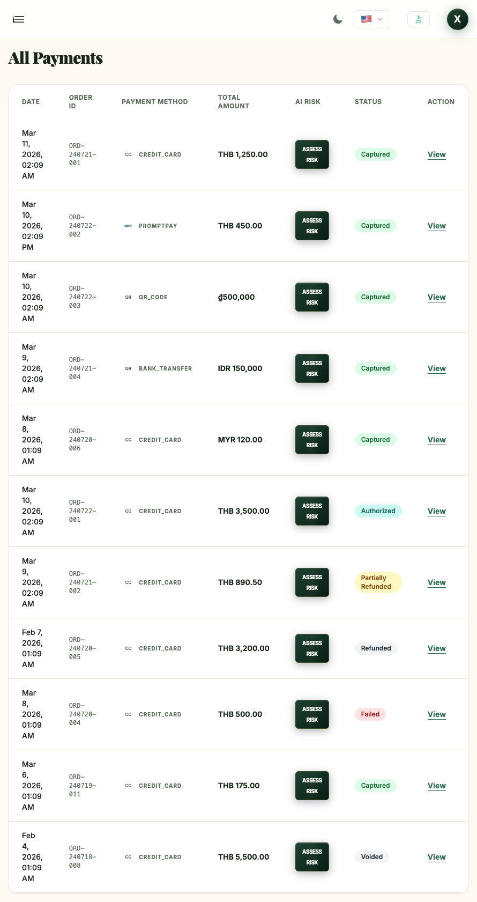

Gateway Provider Bundle
Coreเหมาะสำหรับองค์กรที่ต้องการใช้ระบบรับชำระเงินเป็นบริการหลัก โดยสามารถนำเสนอภาพรวมธุรกรรม สถานะการชำระเงิน และช่องทางการรับชำระได้อย่างชัดเจน
- ติดตามรายการรับชำระทั้งหมดได้จากแดชบอร์ดกลางเพียงแห่งเดียว
- มองเห็นวิธีการชำระเงินและสถานะของแต่ละรายการได้อย่างชัดเจน
- เหมาะสำหรับธุรกิจที่ต้องการภาพลักษณ์การรับชำระเงินที่เป็นมืออาชีพและเข้าใจง่าย